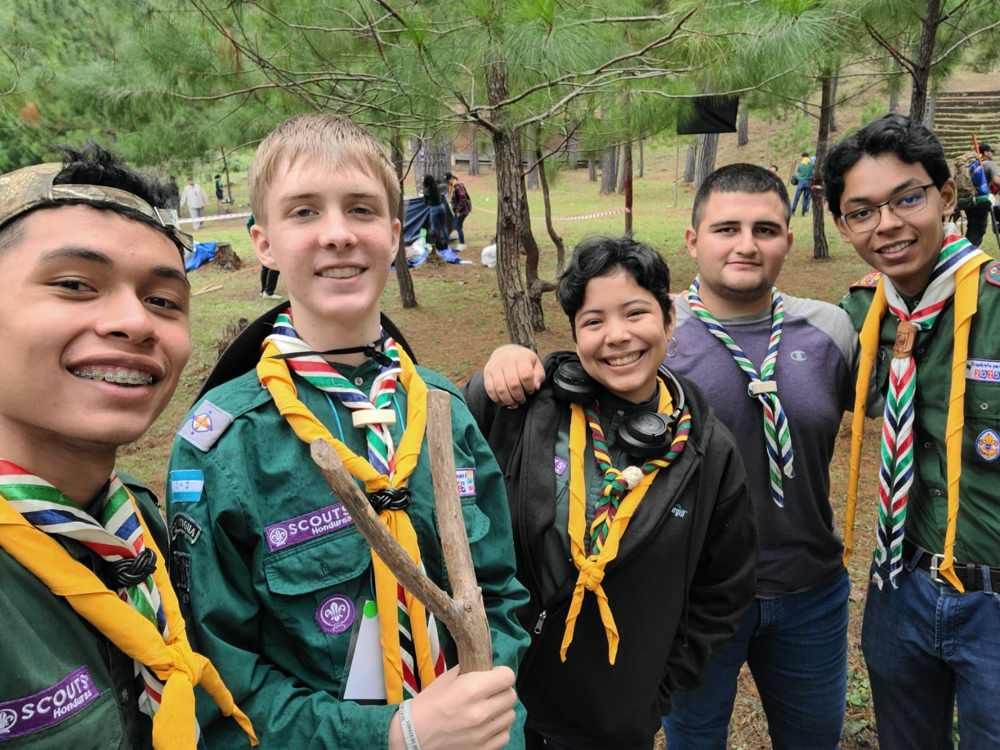
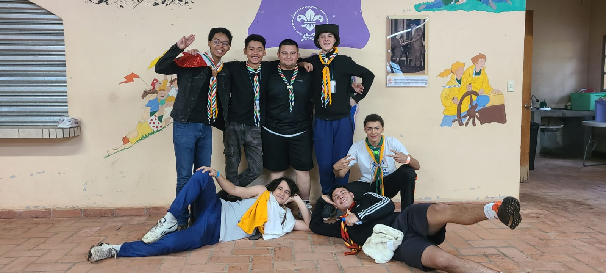
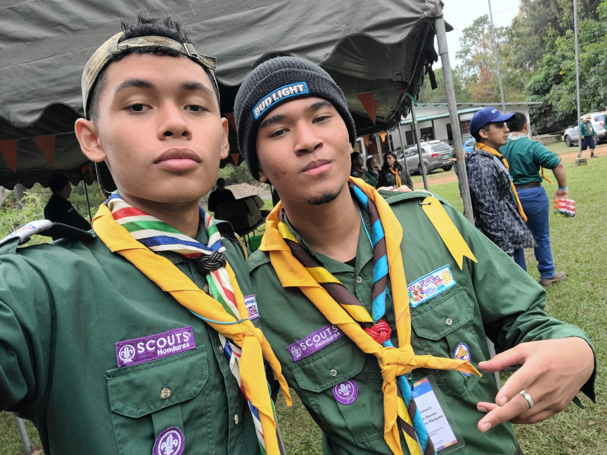
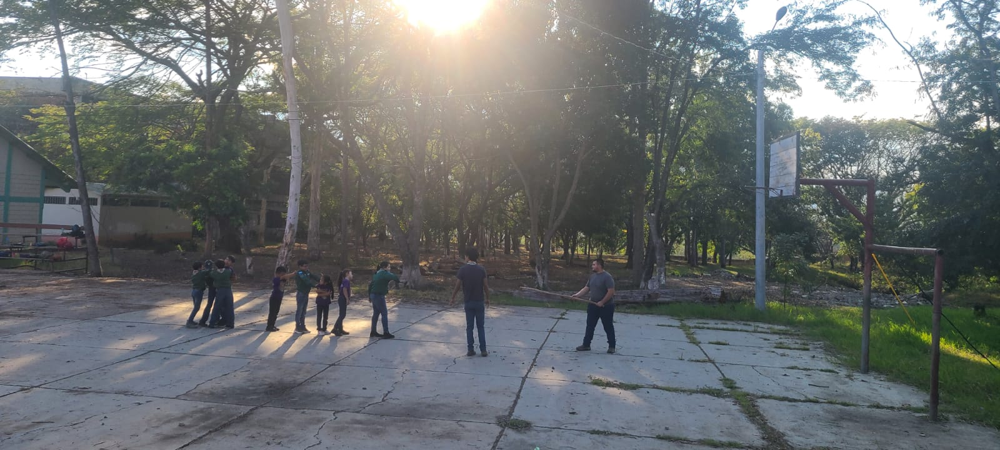

Amigos |
Portafolio Personal |
Gustos y Hobbies |
Vida Scout |
|  |
 |
 |
 |
⚜️⚜️Los Scouts es de las mejores cosas que me han pasado en la vida, ya que me ha permitido conocer muchas personas nuevas, aprender valores importantes como el respeto, la responsabilidad y el trabajo en equipo, además de disfrutar de actividades divertidas como acampar, hacer caminatas y participar en eventos regionales y nacionales. Cada experiencia scout es única y me ha ayudado a crecer como persona, desarrollando habilidades sociales, liderazgo y una conexión especial con la naturaleza. Me siento agradecido por formar parte de esta comunidad y espero seguir viviendo momentos inolvidables junto a mis compañeros scouts.⚜️⚜️